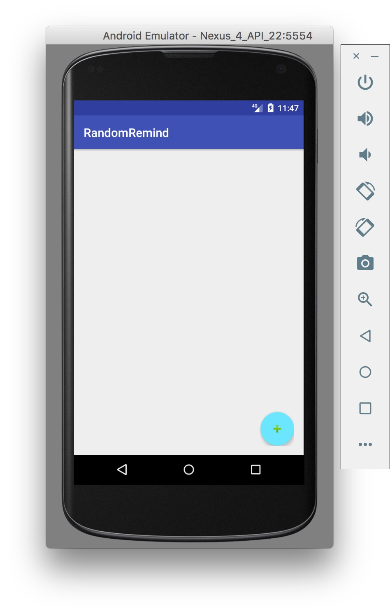

This project attempts to solve a problem with certain notifications, and that is that they happen at a predictable time. For example, if the user wanted to remember to call his/her mother, or tell his/her significant other that they love them, this app reminds them randomly to make it spontaneous. The solution is an Android app that records the time an event is created, and generates a notification a certain number of hours after the reminder is created, within a time period chosen by the user. Additionally, the app excludes times that the user is sleeping, and prompts the user for those times.
Luke Knudsen
Many of the topics from this course were used, most importantly the use of method calls and object creation and references. All of the controls on the "Create event" screen are referenced for information, and even edited in the case of an error. Conditional statements (if) were used to handle exceptions, and a while loop was used to make sure a randomly generated number fell between two values. Use of the official documentation was also used in creation of this project. There are a lot of imports and fields and general OOP design.
One of the main challenges was the expectations of minutes in the Calendar class to be total minutes since Jan 1 1970, however, in the calendar class, minutes are per hour, only between 0 and 59. Because of this, and to handle exceptions, I eventually had to convert all other formats to Date, and in order to do this, I used currentTimeMillis to handle all of the problems when the time period goes over one day, or over the end of a month, or a year.
I created a fairly pleasing and easy-to-use GUI, and the background code (in theory) works. However, testing has been difficult. I had a hard time dealing with the different time formats, but learned a lot in the process. Multiple activities were used.
Full testing, a summary page in the first activity